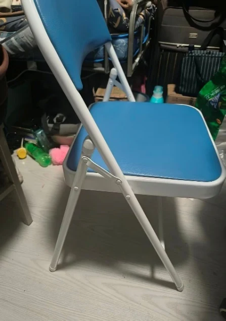
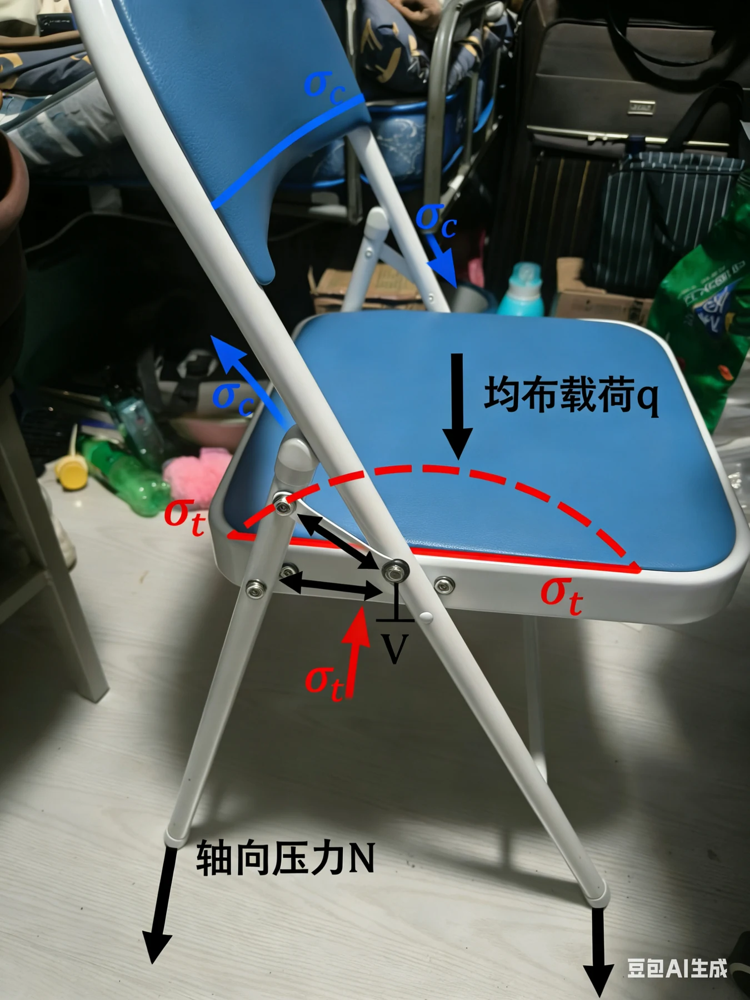
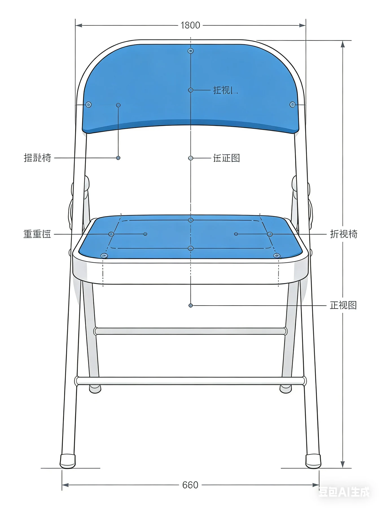

大连交通大学 · 智能建造23
我的原作折叠椅的力学设计与结构原理分析
付新宇
一、力学问题：折叠椅的承载与变形控制
（1）意义
折叠椅需在 “可折叠收纳” 的约束下，稳定承载 50-100kg 的人体重量，核心力学矛盾是 **“结构轻量化” 与 “承载强度” 的平衡 **—— 既要通过薄壁、杆件结构减少材料用量，又要避免使用中发生弯曲、失稳等破坏。
（2）影响因素
材料刚度：金属支架的弹性模量决定杆件变形程度，若材料过软，支架易受压弯曲；
结构形式：“X 形桁架结构” 是关键，可将垂直载荷分解为杆件的拉 / 压力，避免支架受弯；
载荷分布：人体重量在椅面的分布（边缘 / 中心）会改变椅面弯曲应力的大小。
（3）趋势
通过 “桁架式受力 + 薄壁构件” 实现 “以少材料承大载荷”，是小型承载结构的通用设计思路。
（4）力学图示
椅面：受均布载荷 q（人体重量），产生弯矩 M，椅面中间区域受拉、边缘受压；
支架：交叉杆受轴力 N（一根受拉、一根受压），节点处受剪力 V，传递载荷至地面。
二、生活中体现：折叠椅的实际受力与变形
（1）照片



（2）受力 / 变形标注
椅面：用向下箭头标注 “均布载荷 q”，用虚线示意 “弯曲变形（中心下凹）”；
支架：在斜杆上标注 “拉应力 σt”“压应力 σc”，在铆钉节点处标注 “剪力 V”。
（3）配文说明
当人坐在椅面上时，身体重量以均布载荷的形式作用于椅面，使椅面产生轻微弯曲（中心向下变形）：此时椅面的上表面受压、下表面受拉，若仅用脆性材料（如硬塑料），下表面易因拉应力过大开裂，因此实际椅面采用 “硬质面板 + 韧性衬层” 的组合，利用衬层的抗拉性能抵消拉应力。
下方的交叉金属支架通过 “X 形桁架结构” 将垂直载荷分解：靠近地面的斜杆受压力，远离地面的斜杆受拉力，二者共同将载荷传递到地面；铆钉节点承担剪力，保证两根斜杆的力能相互传递，避免支架松散。
三、对照《结构设计原理》内容
折叠椅的设计与 “钢筋混凝土梁” 的设计原理高度契合：
（1）椅面：受弯构件的 “材力组合”
钢筋混凝土梁通过 “混凝土（抗压）+ 钢筋（抗拉）” 协同承载，折叠椅的椅面则采用 “硬质面板（抗压）+ 韧性衬层（抗拉）” 的组合 —— 硬质面板承担弯曲产生的压应力，韧性衬层承担拉应力，对应《结构设计原理》中 “受弯构件需匹配材料的抗拉、抗压性能” 的原则。
（2）支架：桁架结构的 “配筋布置”
结构设计中，钢筋需按受力形式布置（如梁的受拉区配纵筋）；折叠椅的交叉支架则 “按受力方向布置杆件”—— 拉应力由一根斜杆承担，压应力由另一根斜杆承担，节点的铆钉类似 “箍筋”，约束杆件相对位移、避免结构失稳，对应 “桁架结构中杆件仅受轴力、节点传递剪力” 的设计逻辑。
（结尾）折叠椅的设计证明：生活中的物品看似简单，实则是材料力学与结构原理的 “微型应用”，其每一处结构细节都是 “力学合理性” 的体现。
这是一份便于网页阅读的原作视图，保留提交内容的文字、图片和基本顺序；公开页面不显示学号。